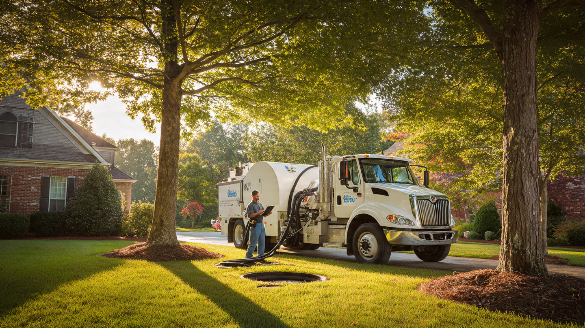

Septic System Compliance SaaS for Independent Pumping Companies
More than 21 million American homes depend on septic systems, generating a $6.7 billion pumping and maintenance industry that grows 4.6-6.7% annually. The average residential pump-out costs $424 and needs to happen every 3-5 years. Yet the typical pumping company tracks compliance with clipboards, carbon-copy inspection forms, and a filing cabinet. States from Massachusetts to Florida are now mandating septic inspections at property transfer. County health departments want digital records. Real estate agents need compliance certificates before closings. The software connecting these parties does not exist.

The Problem
The EPA estimates that more than one in five US households relies on individual onsite wastewater treatment systems, commonly called septic systems. That's roughly 21 million homes, concentrated in rural and suburban areas where municipal sewer connections don't reach. About 60 million Americans flush a toilet every day and trust that a buried tank and drain field will handle the rest.
These systems aren't set-and-forget. A conventional septic tank accumulates solids that must be pumped out every 3-5 years, depending on household size and tank capacity. Skip the maintenance, and solids overflow into the drain field, clogging the soil and causing sewage to surface in the yard or back up into the house. A failed drain field replacement costs $10,000-30,000. A $300-500 pump-out prevents it. The math is simple, but compliance is not.
The problem is informational, not mechanical. Homeowners don't know when their tank was last pumped. Pumping companies don't have reliable ways to track thousands of customers on staggered 3-5 year schedules. County health departments tasked with enforcing maintenance requirements have filing rooms full of paper inspection reports. And when a home sells, the buyer's agent scrambles to find proof that the septic system was recently inspected and functioning, often delaying closings by days or weeks.
Regulations are tightening fast. Massachusetts Title 5 requires a septic system inspection within two years prior to property transfer, with the seller responsible for repairs if the system fails. New regulations adopted in 2023 expanded nitrogen-sensitive area requirements on Cape Cod, mandating enhanced treatment systems for properties near coastal embayments. Florida's Department of Environmental Protection manages over 2.6 million onsite sewage treatment systems statewide, with periodic inspection mandates in vulnerable watersheds. The Chesapeake Bay Total Maximum Daily Load (TMDL) program pressures Maryland, Virginia, and Pennsylvania to reduce nitrogen loading from onsite systems, driving state-level upgrade and monitoring programs.
Each of these regulatory regimes requires documentation: inspection dates, system condition, pumping history, component inventory, corrective actions taken. Today that documentation lives in paper files at roughly 20,000 independent septic service companies across the country, and in manila folders at thousands of county health offices. Nobody has built the connective tissue.
The Gap in the Market
Software for managing field service businesses exists. But septic compliance has specific requirements that generic tools don't address.
| Company | What They Do | What's Missing |
|---|---|---|
| ServiceTitan | $9.5B public company (IPO'd November 2024). Leading field service management platform for HVAC, plumbing, electrical. Offers scheduling, dispatching, invoicing, marketing automation. Lists septic as a supported vertical on their website. | Starts at $300+/month per technician. A 3-truck pumping company would pay $10,800+/year before add-ons. No septic-specific compliance features: no tank registry, no drain field condition tracking, no state inspection form templates, no county health department reporting integration. It's a generic CRM with a septic logo on the landing page. |
| Housecall Pro | Field service management for small businesses. Scheduling, estimates, invoicing, payment processing. $59-199/month tiers. 30,000+ businesses use it. | No compliance layer. Can't generate a Massachusetts Title 5 inspection report, a Florida OSTDS inspection form, or a county-specific pumping manifest. No system component tracking (tank size, age, material, drain field type). No integration with county health department databases. |
| Jobber | Field service software targeting small-to-medium businesses. Quoting, scheduling, invoicing, client CRM. $39-199/month. | Same gap as Housecall Pro: generic field service with zero septic domain knowledge. The inspection forms, regulatory requirements, and system component data that define septic compliance simply aren't in the product. |
| Wind2 Systems (WinCan) | Sewer inspection software for CCTV pipe assessment. Used by municipalities and contractors for mainline and lateral inspection reporting. | Focused on public sewer infrastructure, not private onsite systems. Designed for pipe cameras and defect coding (NASSCO PACP standards), not septic tank inspections, pumping records, or drain field evaluations. |
The pattern across all four: field service software companies have built excellent tools for scheduling and payments but treat compliance as an afterthought. The septic industry doesn't need another way to send invoices. It needs a system of record that tracks which tanks were pumped, what condition they're in, which state/county forms need to be filed, and when the next service is due, and makes that information available to the homeowner, the health department, and the real estate agent at closing.
The Solution
A vertical SaaS platform purpose-built for septic system compliance, with three user interfaces serving the three parties that need the data:
1. Pumper dashboard ($149/month per company, up to 5 technicians): Digital inspection and pumping forms pre-loaded with state-specific templates (Massachusetts Title 5, Florida OSTDS, county-specific variants). Technicians fill out forms on a tablet at the job site, attach photos of tank condition, lid access, drain field surface, and distribution box. GPS-stamped, time-stamped records. Tank registry tracking component details: tank material (concrete, fiberglass, poly), capacity, installation year, baffles, risers, effluent filter status, D-box type, drain field dimensions and age. The system calculates the next recommended pump-out based on household size, tank capacity, and local regulations, then auto-schedules a reminder.
2. County health department portal (free for government users): This is the Trojan horse for adoption. Health departments currently receive paper or faxed inspection reports, which a clerk manually enters into a database (if the county has one). The platform gives health departments a real-time view of every inspection performed by every pumping company in their jurisdiction. Searchable by parcel number, address, or system owner. Exportable for state reporting. Compliance dashboards showing which properties are overdue for inspection. Free for the government side because government adoption drives pumper adoption, which is where the revenue comes from.
3. Homeowner/real estate portal ($0 for lookup, $29 per compliance certificate): Any homeowner can look up their property and see the full service history, system specifications, and compliance status. When a home is listed for sale, the real estate agent or title company orders a compliance certificate through the portal: a PDF documenting the system's condition, last inspection date, and whether it meets current state requirements for property transfer. The $29 certificate fee is paid by the seller or buyer at closing. This is a transaction fee on real estate deals, creating revenue tied to home sales volume rather than pumper subscription count alone.
4. Route optimization engine (included in pumper subscription): Septic trucks are expensive to operate: a vacuum truck burns 4-6 MPG carrying 2,000-4,000 gallons of waste. Industry sources estimate route optimization improves profit margins by 20-30% for septic businesses. The platform optimizes daily routes based on scheduled pump-outs, drive-time windows, disposal site locations, and truck capacity. A 3-truck operation running 6-8 jobs per truck per day saves 45-90 minutes of drive time daily by eliminating backtracking.
5. Automated maintenance reminders (included): The system sends homeowners text or email reminders when their tank is approaching the recommended pump-out interval. The pumping company is credited as the service provider, driving repeat bookings. This is the retention engine: a pumper who uses the platform "owns" the customer relationship through the reminder system. Switching costs increase over time as the customer's full service history lives in the platform.
The Math: What Broken Compliance Actually Costs
Consider a typical real estate transaction in Barnstable County, Massachusetts (Cape Cod). Median home sale price in 2025: approximately $590,000. The property has a septic system. Massachusetts Title 5 requires a passing inspection within two years of transfer.
Scenario A: No centralized records (status quo)
Seller's agent contacts three local pumping companies trying to find who last serviced the system. Two have no records (the homeowner used a different company 4 years ago, which has since changed ownership). The third finds a handwritten service ticket from 2021 but can't verify inspection compliance. A new Title 5 inspection is ordered: $800-1,500 depending on the inspector and system complexity. The inspection takes 7-14 days to schedule in peak selling season (May-August). Closing is delayed 2 weeks. At a 6% commission on $590,000, the agents are collectively earning $35,400 on this transaction. A 2-week delay costs carrying costs, potential deal fallout, and scheduling headaches for everyone involved. If the inspection reveals a failing system, the seller faces $15,000-30,000 in repairs before closing can proceed.
Scenario B: Centralized compliance platform
Seller's agent logs into the portal, pulls up the property by address. The system shows: tank pumped March 2024 by Cape Cod Septic Services, condition rated satisfactory, drain field inspected with no signs of failure, all components documented with photos. A Title 5 compliance certificate is generated instantly for $29. No inspection delay. No scramble for records. Closing proceeds on schedule.
Original analysis: the hidden cost of paper records across the industry. If 5% of the roughly 6 million annual US home sales involve septic systems (a conservative estimate, given that 21M of ~140M housing units have septic, or 15%), that's 300,000 transactions per year requiring septic documentation. If 40% of those transactions experience some delay or additional cost due to missing records (estimated from real estate agent surveys and Title 5 practitioner reports), that's 120,000 transactions affected annually. At an average of $1,100 in unnecessary re-inspection costs and $2,500 in delay-related carrying costs per affected transaction, the industry-wide cost of broken septic compliance records is approximately $430 million per year. A $29 compliance certificate eliminating even a fraction of those costs pays for itself hundreds of times over.
Revenue Model
| Revenue Stream | Amount | Notes |
|---|---|---|
| Pumper SaaS subscription | $149/month (up to 5 techs) | Includes digital forms, tank registry, route optimization, customer reminders. Additional technicians $29/month each. |
| Enterprise tier (6+ trucks) | $349/month | Priority support, API access, multi-location management, advanced analytics. |
| Real estate compliance certificates | $29/certificate | Transaction fee at property closing. Paid by buyer or seller. Volume scales with housing market. |
| Premium homeowner reports | $9.99/report | Detailed system health report with maintenance forecast, replacement cost estimates. Ordered by homeowners or home inspectors. |
| Data licensing (phase 2) | Variable | Aggregated, anonymized system condition data licensed to insurance companies, real estate platforms, or infrastructure planning agencies. Requires scale. |
Unit economics on a typical pumping company (3 trucks, ~1,800 jobs/year): Subscription revenue: $149 × 12 = $1,788/year. If the pumper generates 200 compliance certificates annually for their customers' real estate transactions: 200 × $29 = $5,800/year in certificate revenue (of which the platform keeps 100%). Total annual revenue per pumping company: $7,588. Customer acquisition cost via industry trade shows (WWETT Show, state wastewater association conferences), Google Ads targeting "septic software," and county health department referrals: estimated $400-600. LTV at 5-year average retention: $37,940. LTV:CAC ratio: 63-95x. The certificate revenue is what makes the unit economics exceptional: it's pure margin revenue that scales with the pumper's customer base, not their truck count.
Market Size
TAM: IBISWorld reports approximately 20,000 businesses in the US septic, drain, and sewer cleaning services industry (NAICS 56171). Focusing on the septic-specific subset: an estimated 12,000-15,000 companies primarily perform septic pumping, inspection, and maintenance. At a blended $3,000/year per company in subscription and certificate revenue: $36-45M/year in recurring SaaS revenue. Adding real estate certificate volume (300,000 transactions × $29): $8.7M/year. Combined TAM: $45-54M/year.
SAM: Initial focus on states with mandatory property transfer inspection requirements (Massachusetts, Indiana, parts of Minnesota, select counties in New York, Pennsylvania, and Maryland). These states have approximately 4,000-5,000 septic service companies and generate ~100,000 real estate transactions involving septic systems annually. At blended revenue: $15-18M/year.
SOM (year 3): 400 pumping companies across 3-4 states at $149/month + certificate revenue. Subscription ARR: $715K. Certificate revenue (40,000 certificates × $29): $1.16M. Total year 3 revenue: $1.87M. ~8-10% penetration of SAM.
Why Now
Regulatory pressure is accelerating, not slowing. Massachusetts expanded its Title 5 nitrogen-sensitive area regulations in 2023, affecting an estimated 85,000 Cape Cod properties. Florida's onsite sewage program manages 2.6 million systems with increasing inspection mandates in vulnerable watersheds near the Everglades and coastal areas. Maryland offers Bay Restoration Fund grants to upgrade septic systems to best available technology for nitrogen removal, but requires compliance tracking for funded systems. Each new mandate creates demand for compliance software. The trend line points in one direction.
EPA's "Closing America's Wastewater Access Gap" initiative is expanding. The EPA launched this program to help 150 communities with decentralized wastewater needs pursue federal funding. As federal dollars flow into septic infrastructure, the reporting requirements attached to those funds will demand digital records, not paper.
The pumping workforce is aging out. Like many skilled trades, septic service companies face succession challenges. When a two-truck operation's owner retires and sells the business, the acquiring company inherits boxes of paper records, making customer transition painful. A cloud-based system of record makes businesses more sellable and transitions smoother. This is a quiet but real driver of adoption among owners planning to sell within 5-10 years.
Real estate technology is pulling compliance data into transactions. Platforms like Zillow, Redfin, and Realtor.com increasingly surface property details that affect sale price and timeline. Septic system condition is one of the largest unknowns in rural home sales. A standardized compliance certificate could become as routine as a termite inspection letter, but only if the data infrastructure exists to generate it.
Startup Costs
| Category | Cost | Notes |
|---|---|---|
| Software development (web app + mobile, 8 months) | $240K | 2 full-stack engineers + 1 mobile developer. Cloud infrastructure, form builder, route optimization, customer portal. |
| Compliance form library (50 states research) | $60K | Legal/regulatory researcher to catalog state inspection requirements, form templates, county-specific variants. Start with top 10 states, expand quarterly. |
| Pilot program (3 counties, 25 pumping companies) | $20K | Free subscriptions for first 25 companies in exchange for feedback. Subsidized onboarding, in-person training. |
| County health department integration (3 pilot counties) | $35K | API development for county database integration. Custom work per county initially; standardize interfaces over time. |
| Industry trade show presence (year 1) | $20K | WWETT Show (Indianapolis), state wastewater association conferences. Booth, travel, demo units. |
| Legal and regulatory review | $15K | Privacy compliance (HIPAA-adjacent for health department data), data handling agreements with counties, terms of service. |
| Operating buffer (12 months) | $35K | Cloud hosting, customer support staffing, ongoing compliance form updates. |
| Total | $425K |
Limitations
The 21 million home figure for septic systems is an EPA estimate that has appeared in agency materials for over a decade. The actual number may be higher (some estimates range to 25 million) because new septic installations in expanding suburban areas may outpace the retirement of older systems. Conversely, municipal sewer extension projects in some areas convert septic homes to sewer service, reducing the count. The EPA does not maintain a real-time census of onsite systems. The true installed base is uncertain by several million units.
The real estate compliance certificate revenue model ($8.7M/year at scale) depends on septic-involved home sales volume, which fluctuates with interest rates and housing market conditions. In a frozen housing market like 2023-2024, transaction volume drops significantly. The $29 certificate is also vulnerable to commoditization: once the data is in the system, generating a certificate is near-zero marginal cost. Competitors or county health departments themselves could undercut this price point or offer certificates for free as a public service.
County health department integration is the single highest-risk technical dependency. County IT systems are heterogeneous, often running legacy databases (some still use Access or Lotus Notes). Each county integration requires custom work, making the first 20-30 county connections expensive and slow. The business only scales when county integrations become repeatable or when the platform achieves enough pumper density in a county that health departments adopt the platform as their own reporting interface.
The $430 million annual cost estimate for broken compliance records is a rough calculation built on assumptions about affected transaction rates and average costs. No published study quantifies this figure at the national level. Individual data points from Title 5 practitioners and real estate professionals support the order of magnitude, but the actual number could be significantly higher or lower.
Strongest Counterargument
ServiceTitan has the resources, the field service expertise, and the existing customer base to build this in a quarter. They're a $9.5 billion public company with thousands of plumbing and septic customers already on their platform. If septic compliance software becomes a meaningful category, ServiceTitan can add inspection form templates, county reporting features, and a compliance certificate module as premium add-ons to their existing product. Their distribution advantage is massive: they already have sales reps calling on field service companies every day. A startup trying to sell a $149/month vertical SaaS to the same customers that ServiceTitan targets at $300+/technician/month is fighting uphill on distribution.
The counterpoint: ServiceTitan has been in the septic market for years and hasn't built any of this. Their strategy is horizontal field service management, not vertical compliance. Building a 50-state inspection form library, integrating with county health department databases, and selling free software to government agencies are all activities that make zero sense for a company optimizing revenue per technician seat. ServiceTitan's incentive is to sell more seats to larger companies, not to build a compliance infrastructure that a 2-truck pumper pays $149/month for. The county health department integration, specifically, is a moat that ServiceTitan has no reason to build. Government partnerships are slow, unsexy, and generate no direct revenue for them. For a startup, government adoption IS the strategy: once the county health department uses your platform as its reporting system, every pumper in the county must use it too. That's a lock-in dynamic that no amount of ServiceTitan's distribution budget can replicate.
What You Can Do
If you run a septic pumping company: Start digitizing now, even without purpose-built software. Create a Google Sheet with columns for customer address, tank size, last pump date, next recommended date, and system notes. Set up automated reminders (Google Calendar, Mailchimp, even a spreadsheet formula that flags overdue customers). The companies that track customer maintenance schedules and send proactive reminders report 30-40% higher rebooking rates than those that wait for customers to call. Your records will also become your most valuable asset if you sell the business.
If you're a builder evaluating this space: Start with one county in Massachusetts. Title 5 creates the strongest compliance pull. Partner with the county health department first (offer them a free reporting dashboard), then onboard every pumper in the county through the government relationship. Massachusetts has roughly 650,000 septic systems and a mature inspection ecosystem. Once you have one county locked in, the playbook repeats across Barnstable, Plymouth, Bristol, and Worcester counties. Don't try to boil the ocean with 50-state coverage at launch. Go deep in one regulatory environment, prove the model, expand state by state.
If you're a real estate professional in a septic-heavy market: Track the regulatory trends in your state. Title 5-style inspection requirements are spreading. If your state doesn't mandate property transfer inspections today, it likely will within 5-10 years, following the Massachusetts, Indiana, and Minnesota models. Build relationships with local pumping companies who maintain good records. When a listing has a well-documented septic system, that's a selling point: it signals a maintained home and reduces closing risk.
The Bottom Line
Twenty-one million American homes sit on top of a buried tank that needs professional service every few years, and the industry handling that service runs on paper forms and phone calls. States are piling on inspection mandates tied to property transfers and water quality regulations. County health departments want digital reporting they can't get. Real estate transactions stall for weeks over missing septic records. The pumping companies, mostly independent operations with 1-5 trucks, have no purpose-built software because the field service giants don't care about a $149/month customer with compliance needs they'd have to build 50 state-specific form libraries to serve. The startup opportunity is in the compliance layer that nobody else wants to build: the boring, regulation-specific, government-integrated plumbing (figuratively) that connects a pumper's tablet to a county database to a closing attorney's desk. Whoever builds it owns the data infrastructure for an industry that regulatory pressure is forcing online whether it's ready or not.